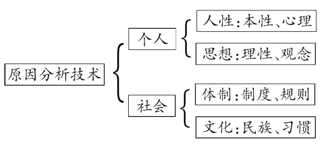

议论文主体段落的“深刻技术”
对于一篇议论文来说，确立中心论点之后，如何展开论证，这是一个关键的问题。传统的议论文教学往往将论证过程总结为“是什么——为什么——怎么办”，这仅仅是确立了论证的方向与逻辑，至于如何操作，则要落实到一系列的“分析技术”层面。
例如，所谓的“是什么”，具体展开即为“定义分析”，“为什么”具体展开即为“因果分析”，“怎么办”具体展开即为“措施分析”。
如何进行上述三种分析，更需要一系列的思维技术，本文将围绕“因果分析”的方法，以一道新材料作文题目为例，具体阐述议论文主体段落的“深刻技术”。
【原题回放】
在美国大萧条的一个冬季里，有一个又冷又饿的流浪汉敲了一家人的门，请求主人给他一顿简单的午饭。男主人看了看流浪汉，指着院子东边的一堆木柴说：“正好那边有堆木柴挡路，请帮我把它移到西边的墙脚去吧。”流浪汉于是非常高兴地帮主人把木柴搬运到西边。当他搬完时，女主人早已给他准备了丰盛的饭菜。主人的孙子看着那堆木柴总是这样搬来搬去，不断有前来工作换取饭菜的人把木柴从东边搬到西边，又从西边搬到东边。直到他长大了，才明白祖父的用意。要求：①自选角度，确定立意，自拟标题，文体不限。②不要脱离材料内容及含意的范围。③不少于800字。④不得套作，不得抄袭。
（中山市高三年级2014—2015学年度第一学期期末语文考试作文题目）
符合题意的观点：给受助者以尊严，即我们在帮助别人的时候，要照顾到受助者的尊严。
Ø 技术之一：原因分析技术
对于这篇议论文而言，论证的主体应该是：为什么我们在帮助别人的时候，要照顾到受助者的尊严？按照一般的理解，所谓的“深刻”，就是要能够揭示出事物的本质或事件、观点的深层原因。而任何一个观点，都可以从两个方面去分析，即个人与社会，而个人的层面，则可以从人性和思想两个角度展开；社会层面则可以从文化与体制两个角度展开，用图表表示即为：

也就是说，一件事情也好，一个观点也好，如果能够从人性、思想、体制、文化等层面进行分析，那就能够把握事情或观点的本质与深层原因，这也是进行原因分析的最锐利的武器。对于“我们在帮助别人的时候，要照顾到受助者的尊严”这个观点而言，如果能够从上述四个角度进行分析，那该主体段落一定是一个发人深省、耐人寻味的段落。笔者试从“人性”的角度进行分析：
————————
给受助者以尊严，原因在于受助者也有天然的心理认同感。（将论点与心理结合）认同，就是渴望获得他人的认可，让他人接受自己。（解释心理）即使是流浪汉，也需要获得一种社会身份的认同，而尊严则是社会身份的主要标志。（结合材料）流浪汉正是在搬木柴的行为中找到了尊严感，从而获得了社会身份的认同。（分析）而陈光标的慈善，则没有将受助者与社会之间的认同摆在首位，高调行善，其实就是割裂了个人与社会之间的统一性，使受助者成为“另类”甚至社会的“疏离者”。（举例分析、反面分析）因此，我们在帮助他人的同时，也要照顾到其尊严。（总结）
————————
这个主体段落其实并不难写，其具体的操作步骤是：首先将论点与原因相结合，即将四个角度中的任何一个与所要证明的中心论点结合起来；然后结合原材料具体解释该角度的内涵；接着运用举例、引用、正反等方法进一步阐述自己的观点；最后总结本段的大致内容。
Ø 技术之二：背景分析技术
所谓背景，指的是对人物、事件起作用的历史情况或现实环境。从这个定义就可以看出，背景，既包括历时性的历史背景，也包括共时性的现实背景。一件事情、一种现象、一个观点之所以能够产生，不外乎有两种原因，一种是过去的、历史的、纵向性的原因，一种是现实的、时代的、横向性的原因。
对一个观点进行历时性的分析与考查，可以使自己的观点深邃，充满历史感，从而更有说服力；对一个观点进行共时性的分析与考查，可以使自己的观点贴近时代，充满现实感，从而更有针对性。
正如马正平先生在《高等写作思维训练教程》中所说：“进行这两个方向的原因分析，就能发现规律，洞察本质，抓住本质和战略重点，获得深刻的认识，并且能找到解决这些问题的方法，开出科学的有效的行动决策的‘处方’——战略和战术。”笔者试从共时性的“现实背景”的角度进行分析：
————————
近年来，（标志语）不少援助贫困家庭子女上学的爱心扶助活动，几乎无一例外是以展示受助对象的贫困为前提的：先是通过媒体大张旗鼓地把受助者的图像、资料公之于众，再集中举行一个“展”贫穷“显”爱心的现场仪式。其时，捐助方风光体面地亮相，高高兴兴给钱给物；受助者接受钱物后，面对镜头“感激涕零”。随后，报纸、电视、网络再继续跟进，广而告之。（背景描述）在张扬“我在献爱心”的同时，受助者的尊严、隐私也一览无余，赤裸裸地袒露在公众面前，这无疑是对受助者的一种伤害甚至羞辱，也有悖慈善爱心活动的本义。（结合观点分析）
————————
这个主体段落的句径是：首先要有标志语，例如“近年来”“当今时代”“当今社会”等，这就是进入现实背景分析的标志；其次是要阐述相关背景，将论点与其在现实社会中的具体表现结合起来；接着进行进一步的分析，可结合材料，也可独立分析；最后进行小结。
Ø 技术之三：价值分析技术
价值，说白了就是“有什么用”，即考查事物或一件事情对其他事物、事件的作用与影响。既然是“作用”，自然会有促进作用与阻碍作用，前者表现为正面价值，后者表现为负面价值。于是“价值分析技术”，相应的就有正面的价值分析与负面的价值分析两种类型，前者笔者称之为“功能分析”，后者称之为“结果分析”，前者分析的是“有什么好处、作用”，后者分析的是“有什么后果、危害”。笔者分别运用上述两种技术，具体阐述原题论点：
————————
正面价值：功能分析
给弱势群体诸如乞丐、流浪汉以帮助，这是以人为本、实现价值平等的体现。（作用分析）人与人之间，物质财富可能不平等，但精神地位与尊严感却是一样的。不论是个人的帮助，还是社会的救助，都应该牢牢把握以人为本的核心价值理念，充分照顾受助者的尊严，不让受助者接受了一点恩惠而永远抬不起头。（进一步展开）当今高校，每年就有大量的勤工俭学岗位，让一些生活困难的学生通过参与不太繁重的劳动获得报酬，以维持基本的生活。（现实例子）这种做法的好处在于，让受助者在劳动中潜移默化地懂得通过自己双手改善生活、改变人生的道理，并以此作为人生准则，离开校园后仍能继续践行与坚守。（对例子的评价）这不也正是故事中那位祖父的用意吗？（结合材料）
————————
————————
负面价值：结果分析
给弱势群体诸如乞丐、流浪汉以帮助，这本是一件好事，但方式不当，就会伤害到受助者，给他们心灵蒙上一层阴影。（结果分析）假如男主人公对待流浪汉的态度是“呼尔而与之”，施舍般地给予他一餐饭，那么流浪汉也不会坦然接受的。（结合材料）对于一些正在成长中的孩子，如果在给予帮助或献爱心时，没有照顾到他们的自尊心，那么自尊受到伤害远比经济生活困难更让他们难以接受。（现实例子）如果慈善变成了怜悯与施舍，那么贫困生尽管得到了捐助，可心里并不温暖，甚至感觉被人瞧不起。（重复观点）这样的话，帮助或慈善的效果也要大打折扣。（结果分析）
————————
这两个段落具体展开的步骤是：首先是直接阐述某观点产生的正面价值或负面价值，即直接将论点与功能或结果联系起来；接着结合材料具体分析功能或结果；然后运用举例、引用、正反等论证方法进一步展开；最后是对本段内容进行小结。
总之，对一个观点进行原因分析技术（人性、思想、体制、文化）、背景分析技术（历史背景与现实背景）、价值分析技术（功能与结果），可以从多角度、多层次对同一个观点进行透彻分析，而这样的主体段落自然会比较深刻，因为这些要素触及到了观点的最根本的原因与最深层的存在。
作者：广东省中山市中山纪念中学 郭跃辉
编选自《语文月刊》2015年第11期《议论文主体段落的“深刻技术”》